# Créons un diagramme en bâtons de la population des arrondissements lyonnais
ggplot(rp) +
geom_bar(aes(x = arm))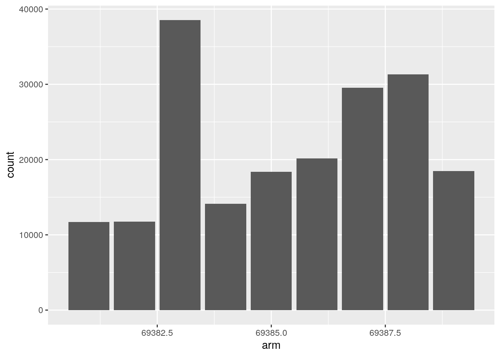
Le package ggplot2 permet de faire l’essentiel de la représentation graphique des données. Il fonctionne selon une logique additive : on ajoute des couches par l’opérateur +
La fonction ggplot permet de déclarer les données sur lesquelles on va travailler.
Les fonctions de la forme geom_ permettent de produire des graphiques. On indique les variables à utiliser à l’intérieur de la fonction aes().
Tout ce qui est indiqué à l’intérieur aes() implique qu’on fait un lien avec les données : compter les effectifs, calculer des moyennes, colorier selon la catégoriew etc.
Tout ce qui est indiqué à l’extérieur d’aes() correspond à des paramètres indépendants des données : colorier toutes les barres en bleu, rendre semi-transparents les points du nuage de points
Des fonctions supplémentaires permettent finalement de paramétrer le graphique, ajouter des légendes et d’autres modifications.
Les diagrammes en barres sont obtenus par le fonction geom_bar. Un graphique produit par ggplot2 s’écrira donc sous cette forme :
# Créons un diagramme en bâtons de la population des arrondissements lyonnais
ggplot(rp) +
geom_bar(aes(x = arm))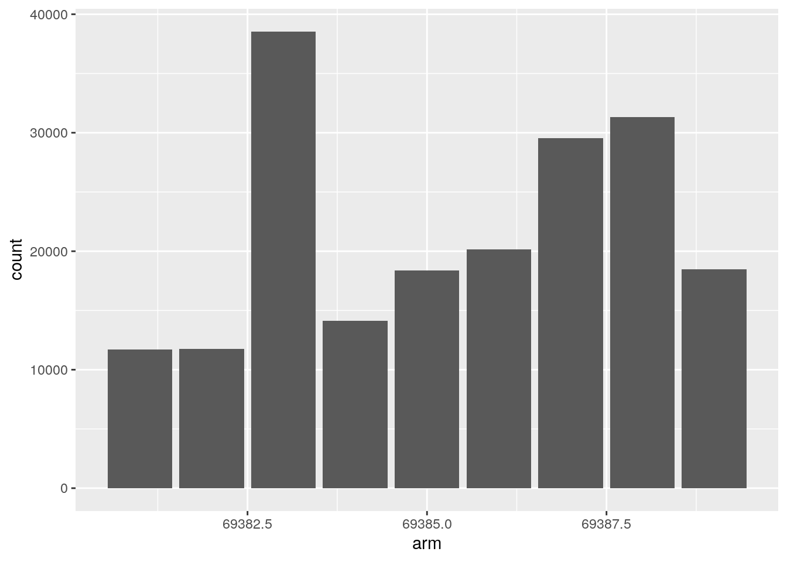
Le graphique ci-dessus est un exemple très commun des problèmes qui émergent quand on ne s’assure pas de la cohérence entre les données dont on dispose, le type de graphique qu’on construit et le code qu’on écrit. Il faut toujours régler les problèmes au fur et à mesure, c’est la seule façon d’isoler les problèmes et de les régler efficacement.
# Dans la version précédente de ce code, la variable non recodée des arrondissements était utilisée
class(rp$arm)[1] "integer"# Les arrondissements sont considérés comme des valeurs numériques.
# Il faut les convertir en facteurs. Profitons-en pour recoder.
rp <-
mutate(rp,
arrondissements =
fct(
case_when(
arm == 69381 ~ "1er",
arm == 69382 ~ "2nd",
arm == 69383 ~ "3e",
arm == 69384 ~ "4e",
arm == 69385 ~ "5e",
arm == 69386 ~ "6e",
arm == 69387 ~ "7e",
arm == 69388 ~ "8e",
arm == 69389 ~ "9e"
),
levels = c("1er",
"2nd",
"3e",
"4e",
"5e",
"6e",
"7e",
"8e",
"9e")
)
)
# On vérifie notre recodage
levels(rp$arrondissements)[1] "1er" "2nd" "3e" "4e" "5e" "6e" "7e" "8e" "9e" # Le graphique actualisé
ggplot(rp) +
geom_bar(aes(x = arrondissements))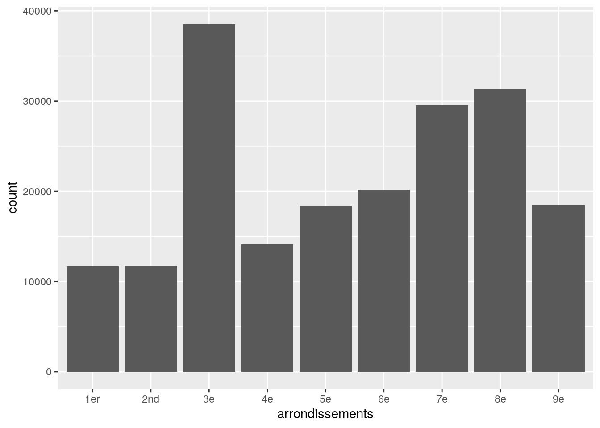
Il faut bien distinguer deux types de commandes données aux fonctions geom_. Celles à l’intérieur de aes vont interroger les données pour produire quelque chose : compter les effectifs des modalités d’une variable, différencier la coulour ou la forme des points selon les modalités d’une variable etc. Les arguments à l’extérieur de aes s’appliquent uniformément à tous les éléments du graphique.
sexe en facteur. La valeur 1 correspond aux hommes et 2 aux femmes. Faites en sorte que la modalité “Femme” soit la première modalité du nouveau facteur plutôt que l’inverse.arrondissements)fill = "red" dans la fonction geom_ en dehors d’aes()fill = sexe dans la fonction geom à l’intérieur d’aes()# 1
rp <-
mutate(rp,
sexe =
fct(
ifelse(sexe == 1, "Homme", "Femme"),
levels = c("Femme", "Homme"))
)# 2
ggplot(rp) +
geom_bar(aes(x = arrondissements))# 3
ggplot(rp) +
geom_bar(aes(x = arrondissements),
fill = "red")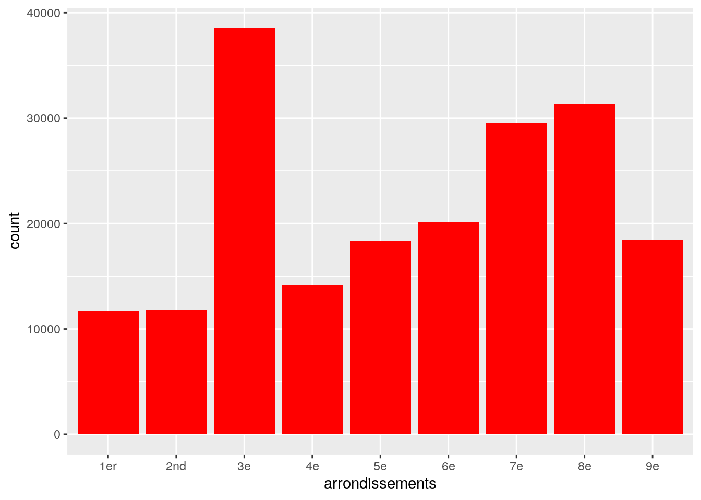
# 4
ggplot(rp) +
geom_bar(aes(x = arrondissements,
fill = sexe))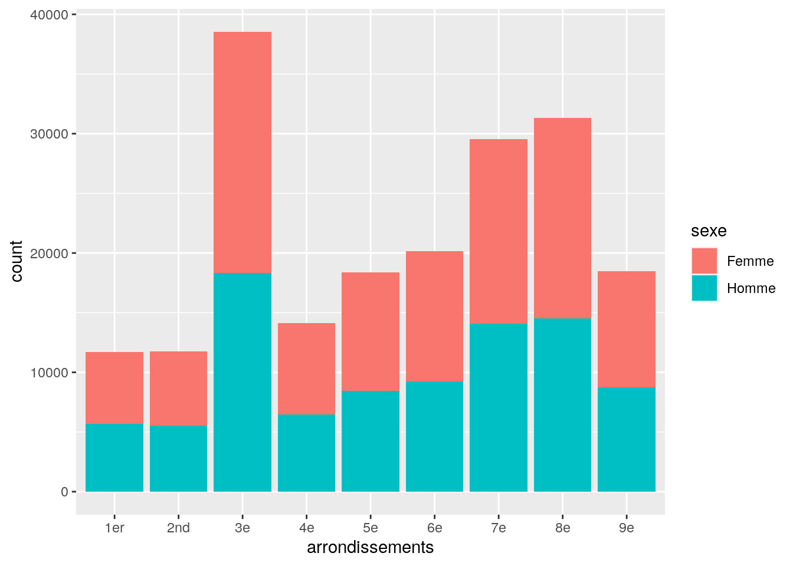
L’argument weight permet de préciser la pondération à utiliser. Puisque la pondération intervient dans les calculs opérés par ggplot, on l’ajoute à l’intérieur d’aes() .
Il ne faut pas se soucier du message :
The following aesthetics were dropped during statistical transformation: weights.# Diagramme en barres pondérées
ggplot(rp) +
geom_bar(aes(x = arrondissements,
weight = ipondi))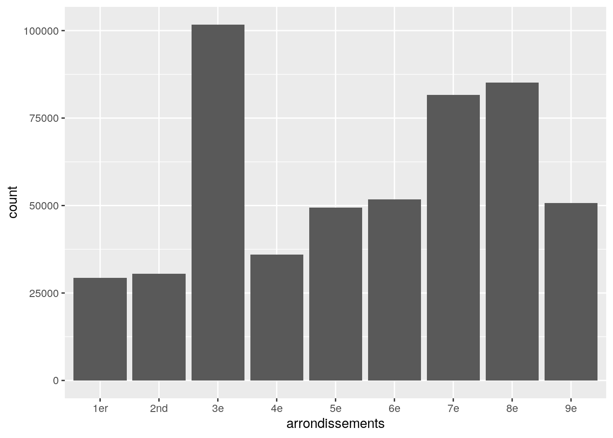
geom_histogram et que la variable de l’âge des individus rencensés est agerev, vérifiez que la variable d’âge est de la bonne classe d’objet et construisez un histogramme qui représente la distribution des âges.bins = 10 dans la fonction geom_histogram et observez le résultatbinwidth = 1 dans la fonction geom_histogram et observez le résultat# 1
# On vérifie la nature de la colonne
class(rp$agerev)[1] "integer"# On construit un histogramme
ggplot(rp) +
geom_histogram(aes(x = agerev))`stat_bin()` using `bins = 30`. Pick better value with `binwidth`.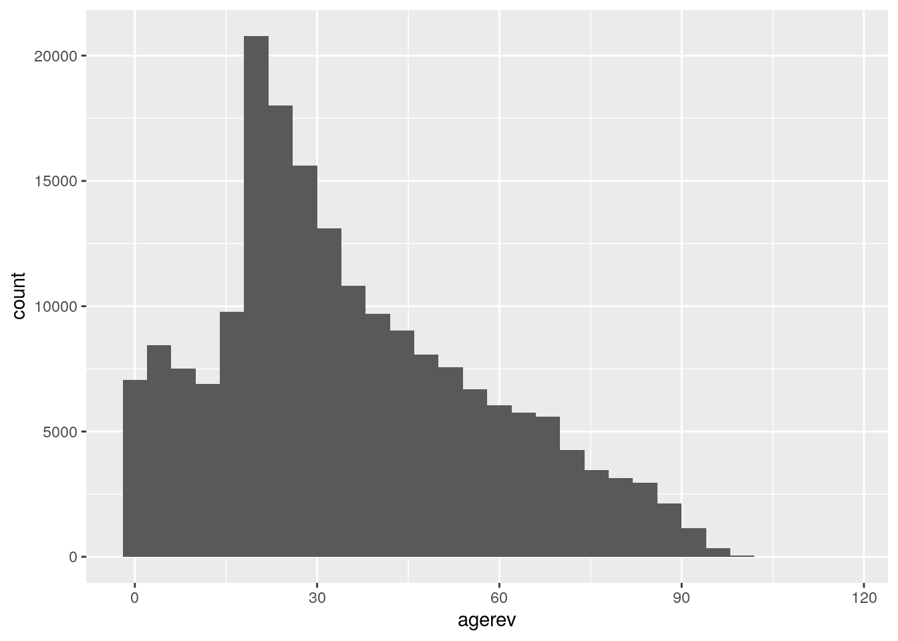
# 2
ggplot(rp) +
geom_histogram(aes(x = agerev),
bins = 10)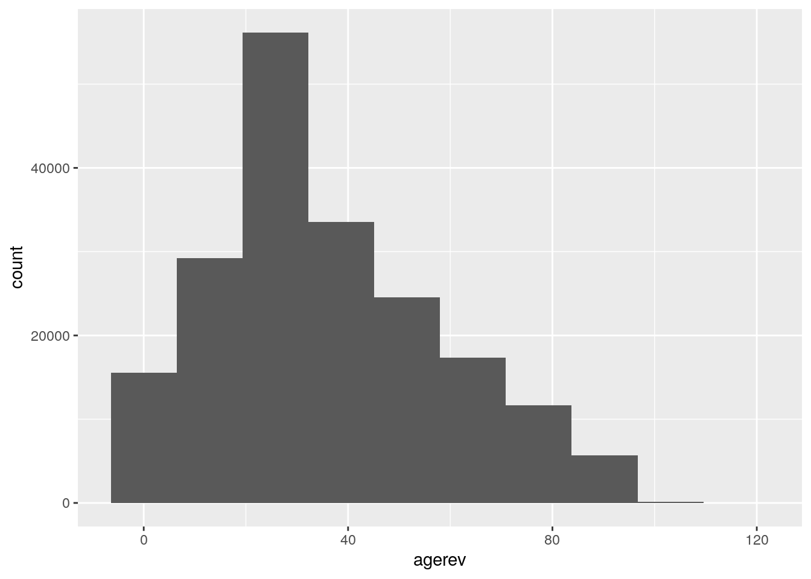
# 3
ggplot(rp) +
geom_histogram(aes(x = agerev),
binwidth = 1)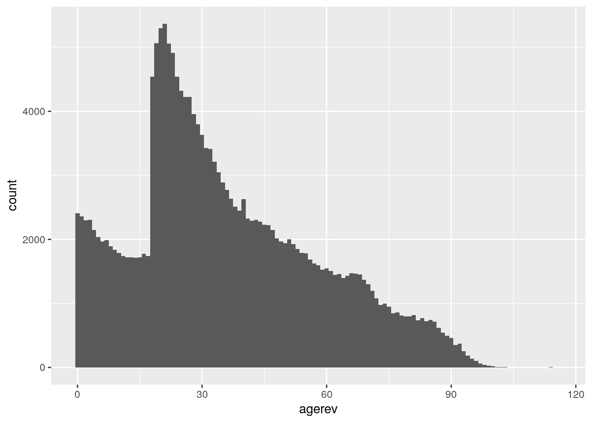
La fonction geom_boxplot permet de construire des boîtes à moustaches. L’argument x détermine la variable numérique dont on veut connaître la distribution. L’argument y, optionnel, permet de comparer les distributions selon le sous-groupe défini par une variable catégorielle.
# La distribution des âges selon l'arrondissement lyonnais
ggplot(rp) +
geom_boxplot(
aes(x = agerev,
y = arrondissements)
)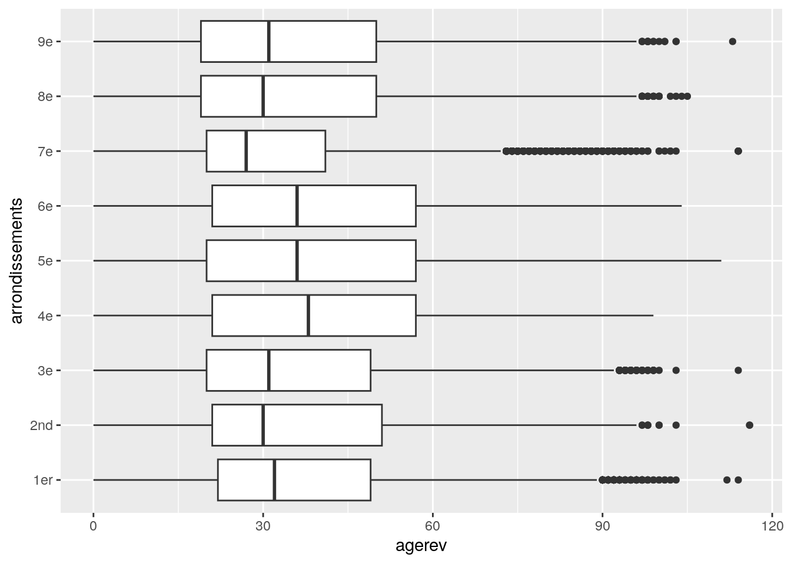
La fonction geom_point peremt de construire des nuages de point. L’argument x détermine la variable représentée sur l’axe des abscisses et l’argument y celle sur l’axe des ordonnées. Ici, on opère d’abord un calcul d’indicateur par arrondissement : l’âge moyen et le nombre d’habitant·es.
# Construire un tableau qui recense l'âge moyen et le nombre d'habitant·es
tab_arr <-
summarize(rp,
age_m = wtd.mean(agerev, weights = ipondi),
# Ici, on fait la somme des poids mais on aurait écrit n() pour compter les effectifs non on'derés
pop = sum(ipondi),
.by = arrondissements)
# On vérifie le tableau
tab_arr arrondissements age_m pop
1 7e 34.35488 81561.00
2 3e 36.38531 101751.91
3 9e 37.03054 50681.00
4 8e 37.02341 85077.36
5 5e 39.81115 49415.00
6 1er 36.02448 29357.27
7 6e 39.17926 51767.76
8 2nd 37.03329 30514.34
9 4e 40.12088 35934.00# Construire le graphique
ggplot(tab_arr) +
geom_point(
aes(x = age_m,
y = pop)
)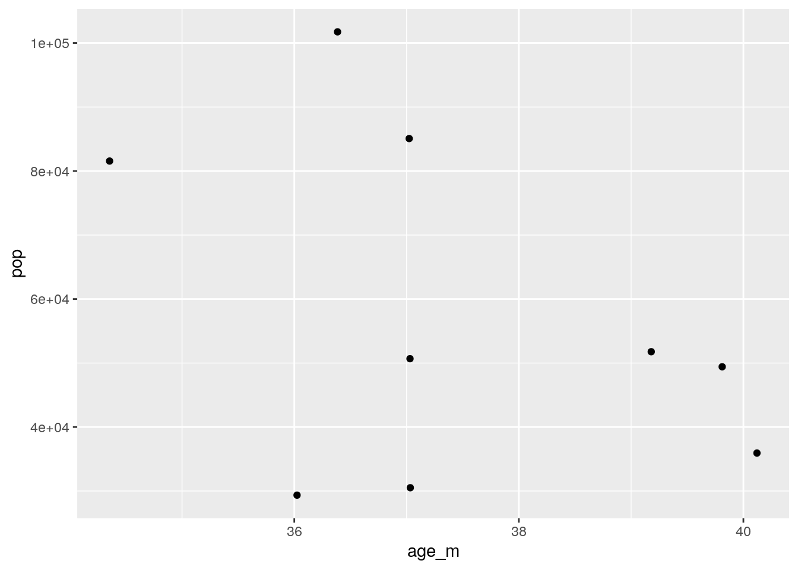
Le graphique précédent ne permet pas d’identifier quel point correspond à quel arrondissement. Il faut pour cela utiliser les fonctions geom_text et geom_label, avec un nouvel argument : label = ...
# Nuage de texte
ggplot(tab_arr) +
geom_text(
aes(x = age_m,
y = pop,
label = arrondissements)
)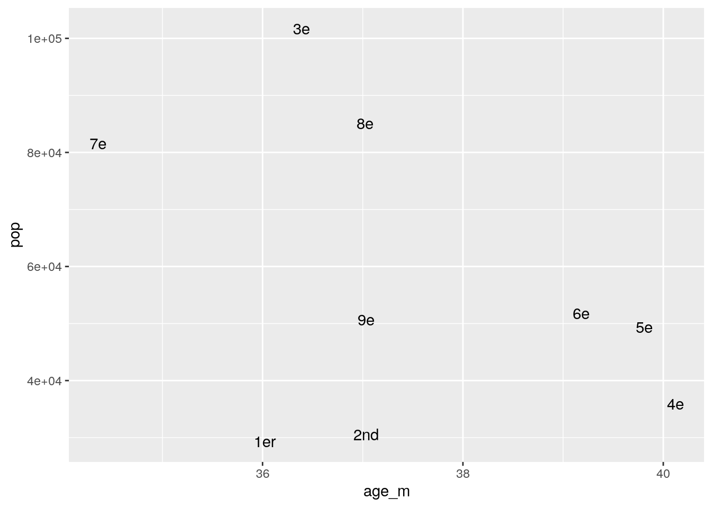
# Nuage d'étiquettes
ggplot(tab_arr) +
geom_label(
aes(x = age_m,
y = pop,
label = arrondissements)
)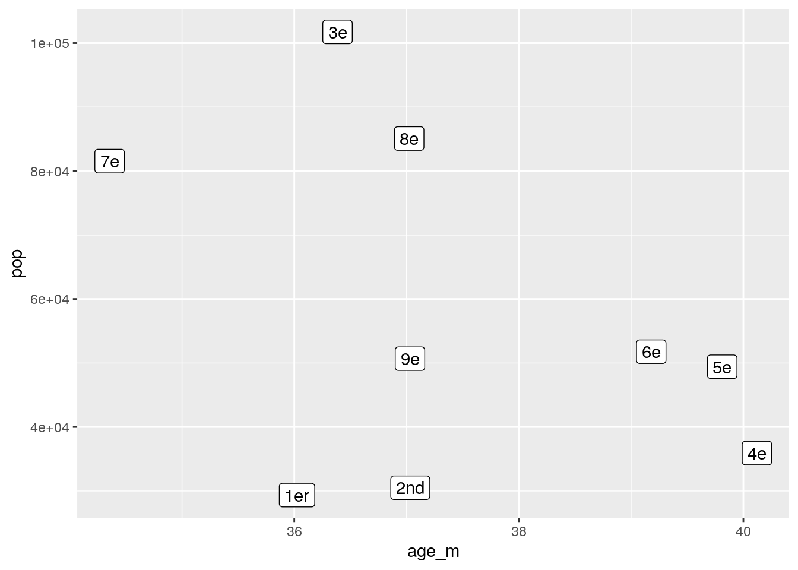
fill et colorIl est possible de lier les paramètres des éléments du graphique (taille, couleur, opacité) à la valeur d’une varialbe. C’est ce qui permet de croiser visuellement des variables. Les arguments fill et color permettent par exemple de colorier les contours ou l’intérieur selon la catégorie.
# L'intérieur colorié
ggplot(rp) +
geom_bar(aes(x = arrondissements,
fill = sexe))# Les contours coloriés
ggplot(rp) +
geom_bar(aes(x = arrondissements,
color = sexe))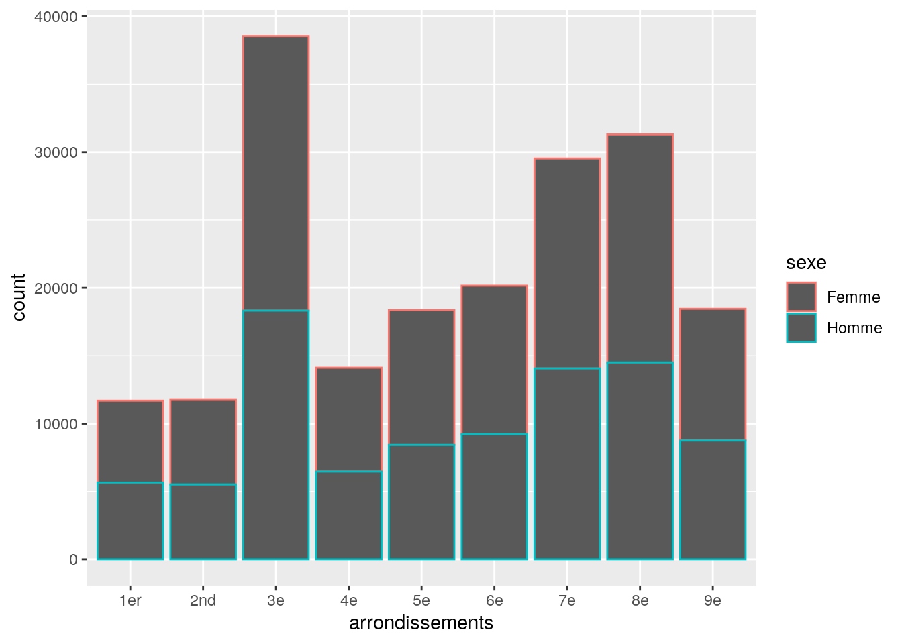
Les paramètres size et alpha pour la taille et la transparence peuvent vous être utiles pour des représentations comme les nuages de points. Ils ne sont pas présentés plus en détail ici.
L’argument position permet de spécifier la disposition des barres. Elle permet de mener des comparaison inter et intragroupes par comparaison de hauteur. = dodge permet de mettre les barres côte à côte, = stack de les empiler (valeur par défaut) et = fill de representer les parts.
# Dodge
ggplot(rp) +
geom_bar(aes(x = arrondissements,
fill = sexe),
position = "dodge")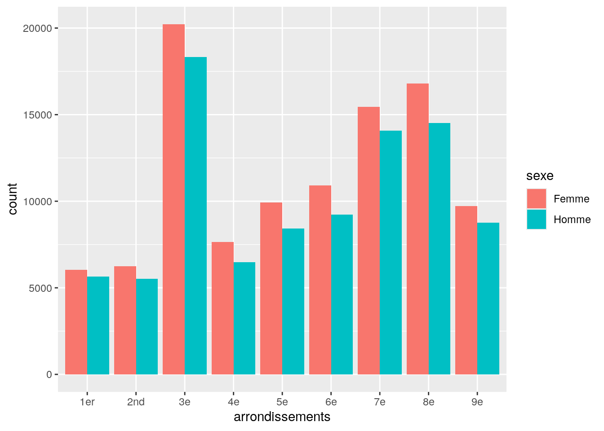
# Stack
ggplot(rp) +
geom_bar(aes(x = arrondissements,
fill = sexe),
position = "stack")
# Fill
ggplot(rp) +
geom_bar(aes(x = arrondissements,
fill = sexe),
position = "fill")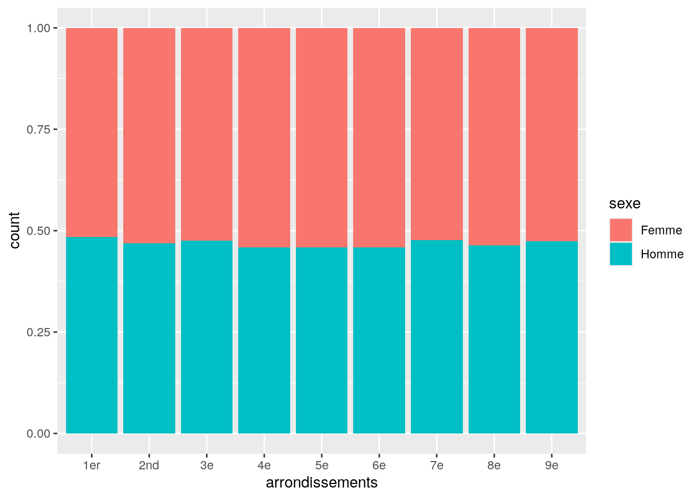
Il reste à légender correctement notre graphique et potentiellement transformer ses axes.
labsLa fonction labs permet de spécifier en un coup la quasi-totalité des légendes d’un graphique.
# Légender
ggplot(rp) +
geom_bar(aes(x = arrondissements,
fill = sexe,
weights = ipondi),
position = "dodge") +
labs(
title = "Population par arrondissement selon le genre",
y = "Nombre d'habitant·es",
x = "Arrondissement",
caption = "Source : recensement de la population 2017 (INSEE) | A. POISSONNIER | 2024"
)Warning in geom_bar(aes(x = arrondissements, fill = sexe, weights = ipondi), :
Ignoring unknown aesthetics: weightsWarning: The following aesthetics were dropped during statistical transformation:
weights.
ℹ This can happen when ggplot fails to infer the correct grouping structure in
the data.
ℹ Did you forget to specify a `group` aesthetic or to convert a numerical
variable into a factor?scale_Les fonctions scale_ permettent finalement de transformer les axes et leurs étiquettes. Elles s’écrivent : - En spécifiant la dimension ciblée (axes x et y, fill, color, alpha etc.) - La nature de l’échelle (continuous, discrete etc.)
# Légender et changer le nom de la légende des couleurs
ggplot(rp) +
geom_bar(aes(x = arrondissements,
fill = sexe,
weights = ipondi),
position = "dodge") +
labs(
title = "Population par arrondissement selon le genre",
y = "Nombre d'habitant·es",
x = "Arrondissement",
caption = "Source : recensement de la population 2017 (INSEE) | A. POISSONNIER | 2024"
) +
scale_fill_discrete("Sexe")Warning in geom_bar(aes(x = arrondissements, fill = sexe, weights = ipondi), :
Ignoring unknown aesthetics: weightsWarning: The following aesthetics were dropped during statistical transformation:
weights.
ℹ This can happen when ggplot fails to infer the correct grouping structure in
the data.
ℹ Did you forget to specify a `group` aesthetic or to convert a numerical
variable into a factor?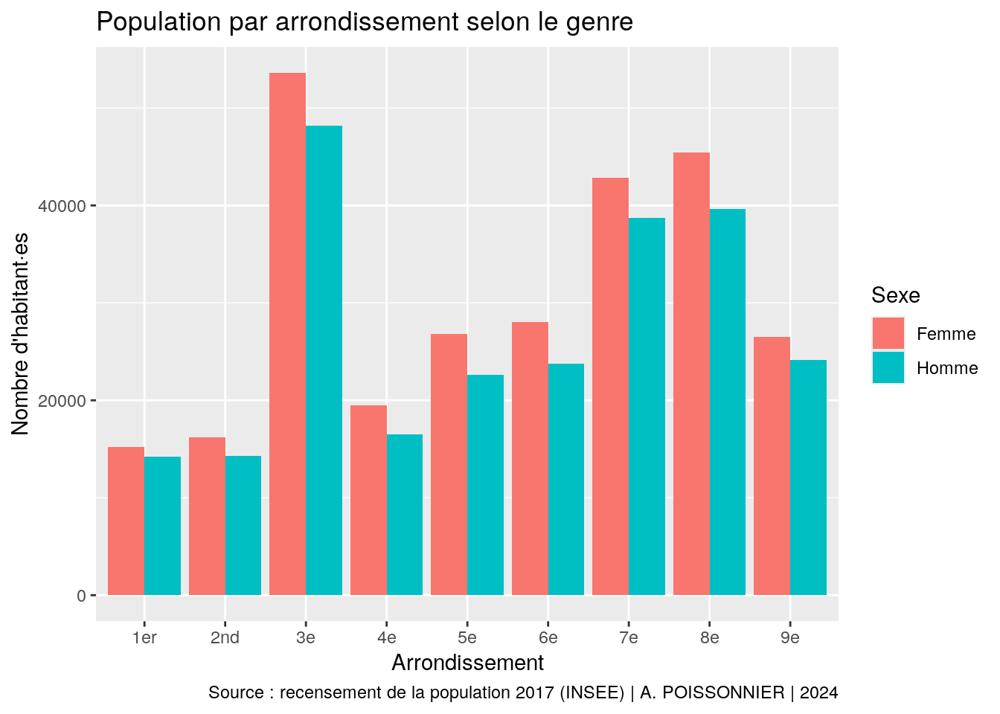
Elles permet par ailleurs de changer la couleur, automatiquement en changeant de palette ou manuellement en spécifiant des valeurs. On peut notamment se référer aux couleurs du package RColorBrewer. Il faut alors utiliser les fonctions scale_color_brewer et scale_fill_brewer.
# Afficher toutes les palettes de couleur
# On appelle ici la fonction sans avoir préalablement hargé le package avec library, d'où le RColorBrewer::
RColorBrewer::display.brewer.all()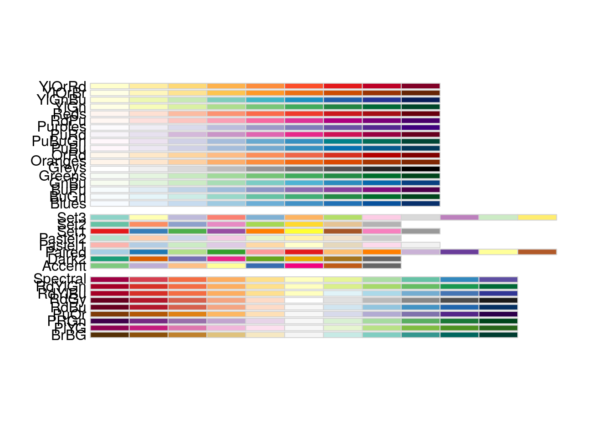
# Automatiquement, en choissisant la Palette "Set1"
ggplot(rp) +
geom_bar(aes(x = arrondissements,
fill = sexe,
weight = ipondi),
position = "dodge") +
labs(
title = "Population par arrondissement selon le genre",
y = "Nombre d'habitant·es",
x = "Arrondissement",
caption = "Source : recensement de la population 2017 (INSEE) | A. POISSONNIER | 2024"
) +
scale_fill_brewer("Sexe",
palette = "Set1")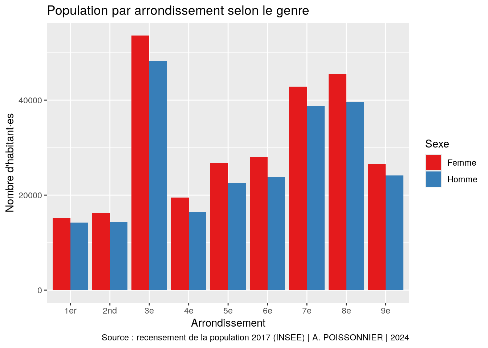
# Manuellement en créant un vecteur nommé
couleurs_sexe <-
c("Homme" = "#ffffbf",
"Femme" = "#d7191c")
# Puis avec la version manual de la fonction scale
ggplot(rp) +
geom_bar(aes(x = arrondissements,
fill = sexe,
weight = ipondi),
position = "dodge") +
labs(
title = "Population par arrondissement selon le genre",
y = "Nombre d'habitant·es",
x = "Arrondissement",
caption = "Source : recensement de la population 2017 (INSEE) | A. POISSONNIER | 2024"
) +
scale_fill_manual("Sexe",
values = couleurs_sexe)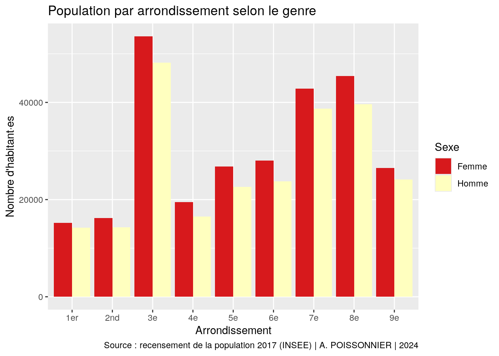
theme et theme_Les fonctions theme et theme_ permettent de choisir des modèles graphiques et paramètrer des éléments.
# Passer en thème blanc et noir et mettre la légende en bas
ggplot(rp) +
geom_bar(aes(x = arrondissements,
fill = sexe,
weight = ipondi),
position = "dodge") +
labs(
title = "Population par arrondissement selon le genre",
y = "Nombre d'habitant·es",
x = "Arrondissement",
caption = "Source : recensement de la population 2017 (INSEE) | A. POISSONNIER | 2024"
) +
scale_fill_manual("Sexe",
values = couleurs_sexe) +
theme_bw() +
theme(legend.position = "bottom")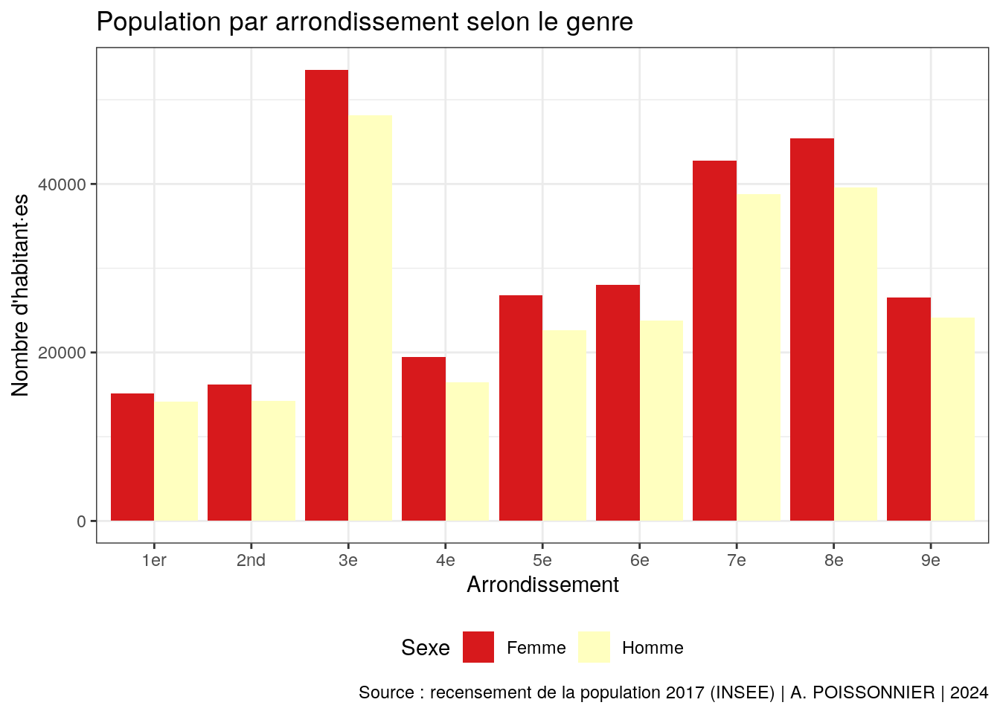